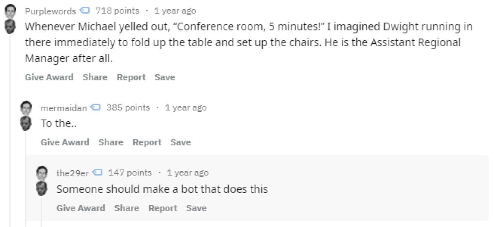
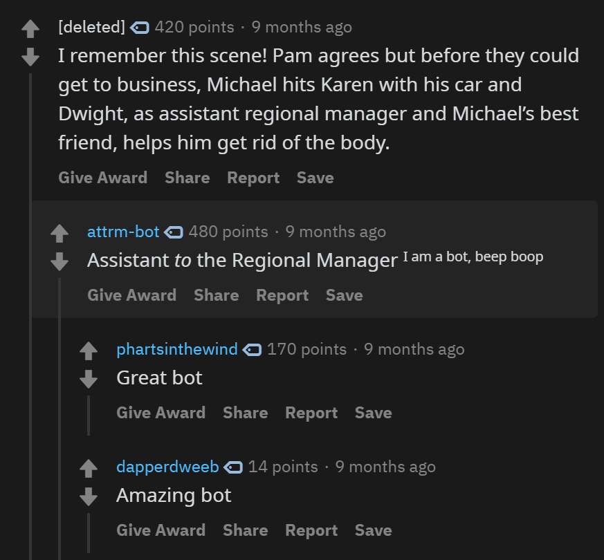

Sitting in my parents living room home for break I came across this comment on Reddit.
I decided to try my hand at creating a Reddit bot, an afternoon of coding later u/attrm-bot was born.
u/attrm-bot is written as a Python script that interacts with the Reddit API. It gets called every 10 minutes using Heroku Scheduler.
It checks the latest 100 comments from r/DunderMifflin the phrase "Assistant Regional Manager." Once the bot finds the incorrect phrase it comments "Assistant to the Regional Manager."
As of this article my bot has 2,377 karma making it arguably my most successful project.